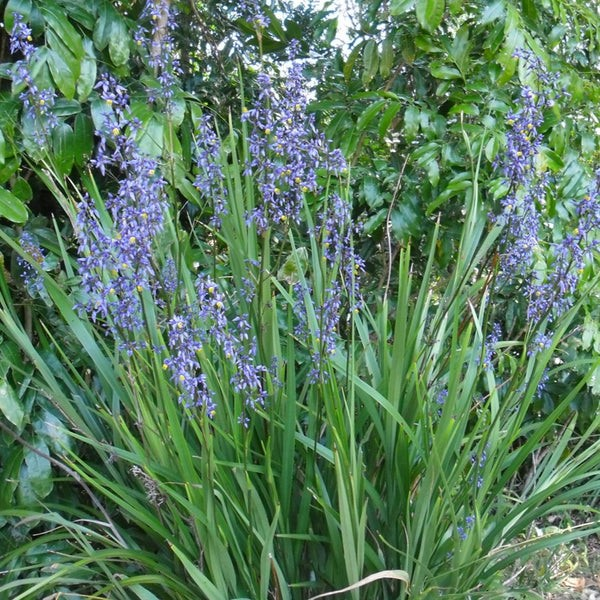

|  |
Overview
Blue Flax Lily (Dianella caerulea), is a perennial plant native to Australia. It has strap-like firm leaves that are blue-green in colour, and it produces edible blue berries with small seeds, and clusters of small blue flowers in the Spring & Summer. The plant typically grows up to 1 metre tall and wide. Flowers can range in colour from pale blue to deep blue/purple, and are roughly 1 to 2 cm wide. The fruit are round blue/purple berries 4 to 10mm in diameter containing black seeds.
|
|
Where it grows
Flax lilies are most commonly found in dry woodlands, moist open forests, rainforests and coastal dunes along the east coast. These adaptable plants are widespread throughout Australia, and are able to grow in a wide variety of conditions. It’s resistant to drought and frost, and recovers fast from fire damage. It is recommended that the plant is planted in full sun or part shade, in nutrient-rich soil.
Nutritional value identified by First Nations People
Blue Flax Lily was traditionally used as a tea ingredient in Aboriginal medicine — both root and leaf were used to remedy illnesses. Many of the deep blue berries were eaten because of their anti-inflammatory and antioxidant properties. The longer and stronger leaves of the plant could be used for weaving to create baskets or trenah. They could also be woven into waistbands, footwear, and nests.
How we use (your fruit) today
This Australian plant is used today by harvesting and eating the berries, or using the flowers and berries for dye. Its berries are still occasionally used for medicinal purposes, but it has become much less common.
Why we should farm (your fruit)
This native Australian plant is easy to grow and harvest in large quantities because it is drought resistant and low maintenance. Since it is native to Australia and widespread, climate and low rainfall are not a major issue. It flowers in Spring and summer, for half the year, and since the average plant size is relatively large, this should mean a sizable production of berries and flowers annually. This Dianella species is a very hardy evergreen, adapted to a wide range of growing conditions, so it is easy to grow in communal or school gardens. Its berries can be used for both health benefits and taste in sweet or savoury dishes, or by themselves, and its roots/leaves for remedial teas.
|